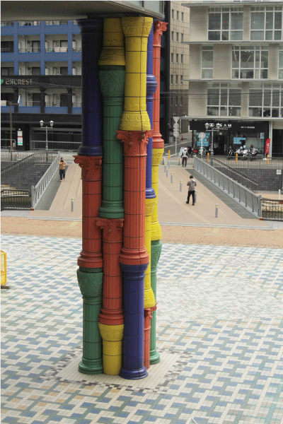
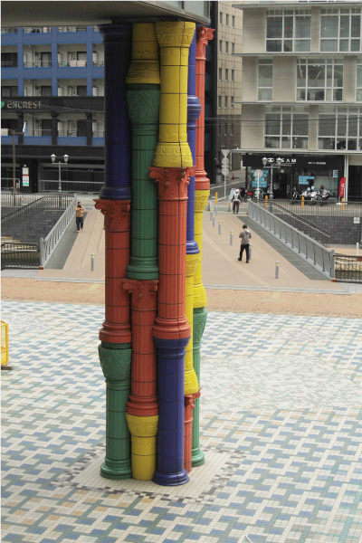
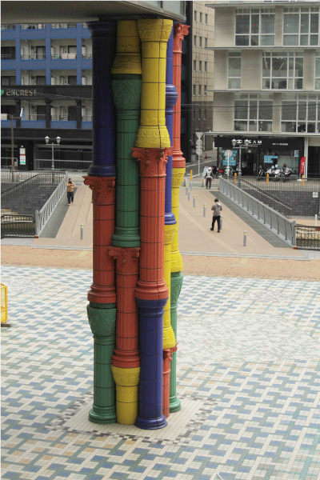

崔正化

博多リバレインのホテルオークラ側の入り口、アンパンマンミュージアムを訪れる
子ども連れのファミリーが、頻繁に出入りする入り口に存在する異質な柱。
『柱は柱』は、赤、青、黄、緑の四色の柱が積み重なり、一つの柱となっているような作品。
子供が遊ぶブロックのおもちゃを大きいスケールにしたようで、ファンタジックな印象だ。
四色の柱はそれぞれ違った形をしており、コリント、ビザンチン、ドーリア、和式のそれぞれ
の様式が施されている。それら重厚な歴史をもった西洋と東洋の柱をカラフルに軽やかに
表現することで、博多が様々な国と交流してきたことを表している。